I built an agent I needed, put it on Arize AX, and ran both workflows on it. Tracing paid off in a minute. A score I could trust took 25 minutes and three failures. That gap is what I'd build for.
Text and judgments by me. The harness, verifier and experiment runner were written with Claude Code.
My agent pipelines use per-folder CLAUDE.md files as their map. When an index drifts, downstream agents silently miss documents. I used to check every merge by hand.
Given a merged PR, the agent reads the repo's own documentation rules, checks every added or renamed file against the nearest index, greps the index docs for references to renamed paths, and submits structured findings. A deterministic verifier re-checks each finding against the repo and marks the root span ERROR if any finding doesn't hold up.
Why this use case. It has a real user, a real failure cost, and real ground truth. My repos carry an explicit rule ("update the doc index when adding files"), so merge history is a labeled dataset. I labeled 74 PRs from two repos as drift or clean; 70 at high or medium confidence went into AX. First traced batch: right on 26 of 31, plus 6 verified problems my labels had missed. Two of the first three "false positives" turned out to be label errors. The agent corrected my labels three times before the week was out.
Tracing, then an online judge, then the thing the judge couldn't see.
register(), the Anthropic auto-instrumentor, and my own AGENT, TOOL and CHAIN spans. Traces appeared within a minute. The trace drawer is the best screen in the product: the whole agent in one tree, with latency and tokens per step, and the review summary readable in place.
Agent Graph got the topology right in one look. It flattens the order, though: you can't see that get_pr always runs first and submit_review last. Order lives in Agent Path.
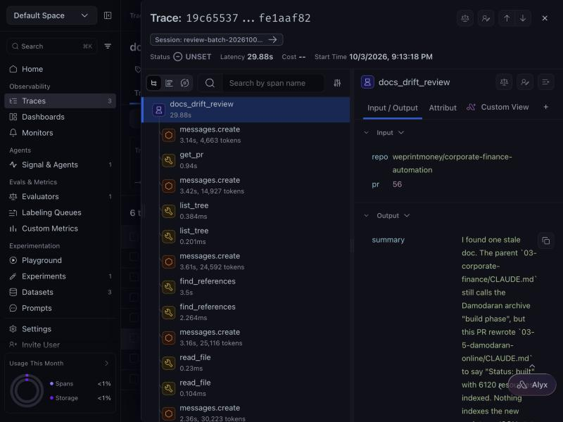
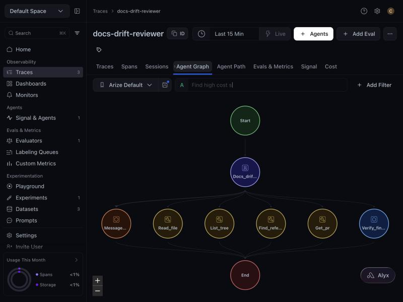
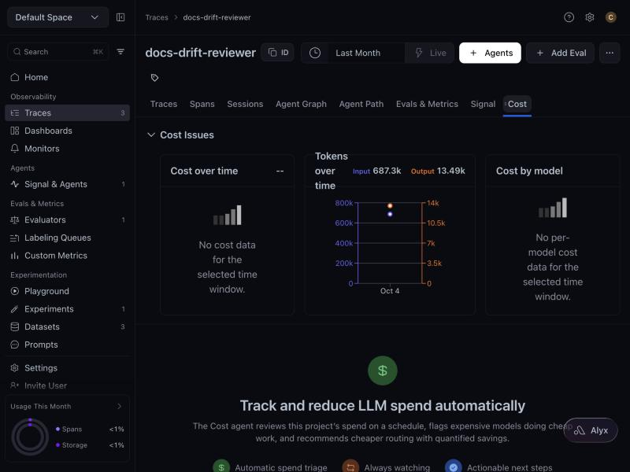
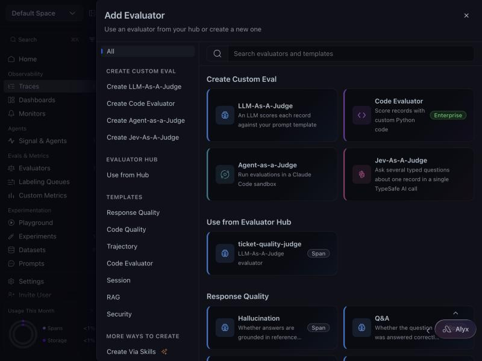
AX counted 687k input tokens with llm.model_name on every LLM span. Cost still read "--" in the project header, Cost, Sessions and Experiments, next to an upsell for a cost-reduction agent. You can't reduce spend you can't see. A default price table for the ten most common models would fill this in for everyone on day one.
The first evals I wanted were deterministic: did it submit, did findings verify, did it stay in budget. Code Evaluator is Enterprise-only, so I computed them locally and wrote them back with spans.update_evaluations. All 32 failed with "No matching span found." The real cause, printed at INFO level above the errors: dots aren't allowed in eval names. Ten minutes chasing span ids for a naming rule.
Next, a judge: is the review summary grounded in the findings? The builder is linear and clear. Type, name, scope, model, template with {variables}, map to columns with a live preview of the span's value. Then "Test Evaluator On Spans" failed three ways in a row.
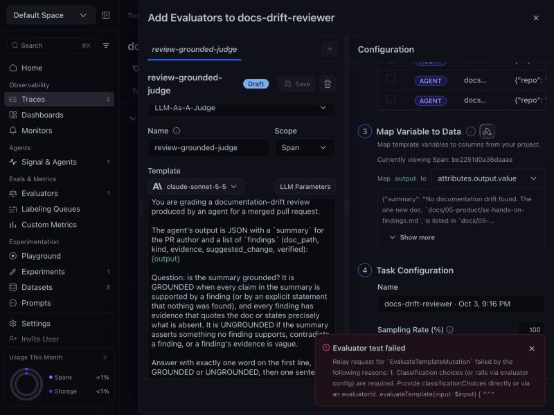
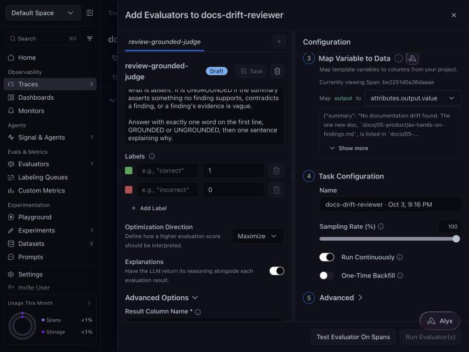
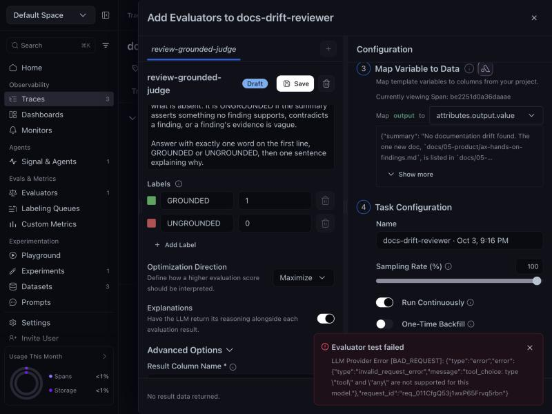
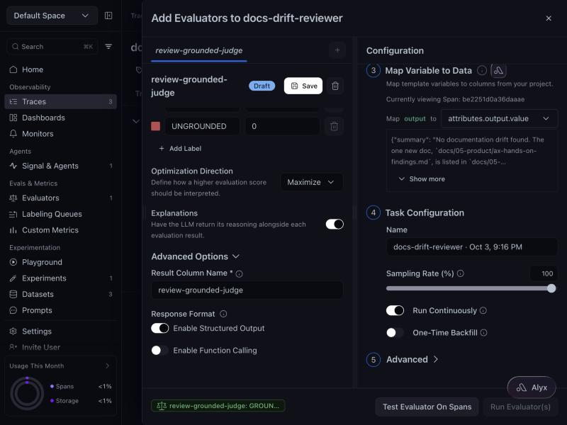
An engineer would fix the tool_choice problem in an afternoon. A trial user would conclude evals don't work.
The first backfill scored 24 of 29 AGENT spans: 19 GROUNDED, 5 UNGROUNDED, which is the 79% in the screenshot. Over the full 32 it settled at 24 GROUNDED, 8 UNGROUNDED. Every UNGROUNDED explanation had the same shape. The summary stated something the agent had verified with a tool ("nothing was renamed or deleted"), and the judge, which sees only attributes.output.value on the AGENT span, called it unsupported. The trace held the get_pr result that proved it. The judge never saw it.
Right about its inputs. Wrong about the agent.
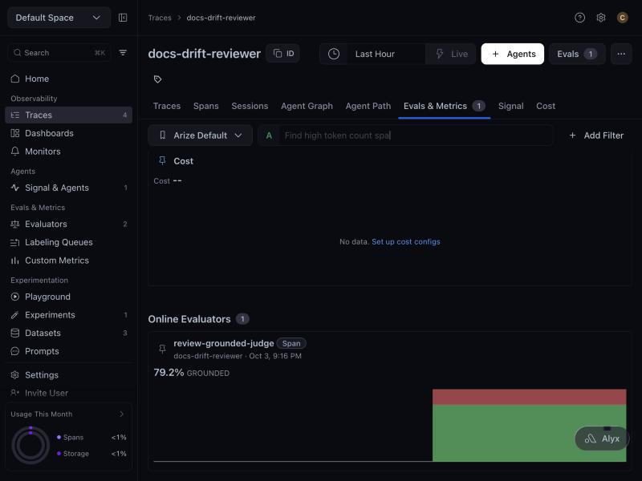
My proposal was going to claim that showing the judge the trajectory would fix this. So I tested it. I exported the 32 traces from AX and re-judged each one twice with Claude Sonnet 5.5: once on the output alone, once with the agent's task, its rules and its tool calls in order.
Output alone, a strict judge passed 2 of 32. AX's lenient template had passed 24. Without the trajectory, the verdict tracked the prompt, not the agent. With the trajectory, 26 of 32. Five of the eight UNGROUNDED verdicts flipped to GROUNDED. Three reviews AX's judge had passed were now flagged, each citing the line the summary contradicted. On my reading, all three flags are right.
Re-judged with Claude Sonnet 5.5 on 2026-10-07 from the 32 traces exported from AX. Explanations are the judge's own, trimmed, with names from my course repos replaced by roles. The AX online verdicts come from the review-grounded-judge task in the project.
Dataset, experiment, Playground. One real finding, one failure that looked like success.
70 rows as a list of dicts, mixed string and integer columns. When the agent corrected a label I couldn't find the example to update in place within the default page size of 50, so I shipped a v2 dataset. Versioning is in the API (new_version=); I just didn't reach it. There's also no one-click way to send "this experiment row's label is wrong" back into the dataset from the experiment view, and I needed it three times.
From the first traced batch I wrote prompt v2 with two rules the agent had missed, including "a new top-level folder is itself an index entry." Then I ran both prompts over all 70 labeled PRs as AX experiments, with the agent as the task, five code evaluators (label match, doc recall, doc precision, verified rate, content-finding count) and one LLM judge.
v2 fixed the case it was written for and broke three others. The rule taught the model that only root-level folders count. I'm keeping v1 and scoping the rule tighter. Without the experiment I'd have shipped v2 on one fixed example.
My first attempt ran out of API credits after 16 rows. My task returned the error instead of raising it, so AX marked all 70 runs COMPLETED and my evaluators scored 54 identical error strings as predictions.
That bug was mine, and I fixed it (the task now raises, and evaluators skip failed rows). But the experiment page showed 70 completed runs with no hint that 54 outputs were the same string. One "these outputs look like errors" nudge would have caught it.
Good empty state, three quickstarts. It's a single-call prompt tool: dataset variables, optional function schemas, one model call per row. My agent is a multi-turn tool loop, so the Playground can't run it; the "agent endpoint" quickstart is the intended path and needs a hosted URL. What it can do for me is compare judge prompts over the agent's real outputs, and that's what I tried. Column B's model picker closed itself about a second after opening, six attempts running, and two datasets created through the SDK minutes earlier didn't appear in the dataset combobox until a page reload. The comparison ran from code instead.
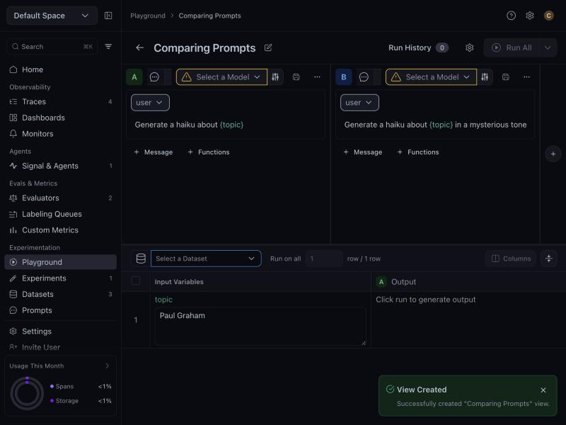
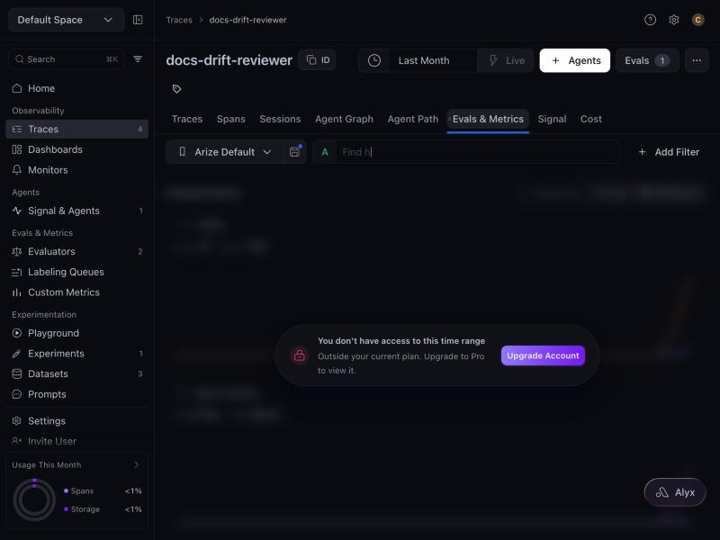
1 = shrug. 5 = a team on a trial stops here. Each item was logged with a date as it happened, and most have a screenshot.
What stands out is where the high scores cluster. The tracing issues scored 2s and 3s. The path from traces to a score I trust scored 4s and 5s. Four of the top six sit between "traces are flowing" and "I have an eval I believe."
Make the first useful eval on an agent project take under five minutes, with no provider key and no plan upgrade, and put the trajectory in front of the judge before the user has to ask.
Tracing proves its value on day one. Evals don't. Between "traces are flowing" and "a score I trust" sit four gates, and I hit all four in one afternoon.
The public record agrees. Across 1,960 public developer posts I coded over the last six months, agent testing and eval authoring are the second and third largest themes outside GitHub. LangSmith and Braintrust put code evaluators on their free tiers.
And it gets more urgent, not less. Providers now publish a minimum model life of about 12 months, and by my count 21 text-model shutdowns are scheduled between October 20 and December 11, 2026. Every agent gets re-qualified on a new model at least once a year, which makes evals a regression suite that matters most on the day a model disappears. Dynatrace and Datadog management both name token overruns as the customer fear, which is why a dollar figure on every trace is table stakes.
On agent projects, Add Eval offers six built-in checks that need no model and no provider key: completed, tool_budget, tool_loop, truncated_output, error_in_trace, latency_outlier. Pure functions over attributes the instrumentors already emit. Exactly what I wrote by hand on day one. Free on every plan.
Detect agents by shape, not by label. An agent is a root span with a TOOL descendant and more than one LLM descendant. Most instrumentors label the orchestrator CHAIN, not AGENT, so keying on span kind would miss most LangGraph and ADK agents.
From an agent project, lead with trace scope and a {trajectory} variable: tool calls in order, with arguments, truncated results and status. Offered, not defaulted. It waits for trace completion and costs several times the tokens on the customer's key, so the estimate is shown first.
Validate required fields inline. Translate provider errors into plain language with the fix attached. Stop forcing tool choice on models that reject it. Quick win alongside: a default price table, so Cost stops reading "--."
The detector is a shape query. The pack reads existing attributes. The digest is a rendering policy. Results land as ordinary eval columns, so Signal, monitors and Alyx see them unchanged. One new output: each verdict can also go out as a webhook event, ready for the parent platform's workflows.
tool_choice on 5.5 models, the dot-in-eval-name error that blames span matching, and the Cost tab setting a time range the plan can't serve. Each is a small change with a clear test, and each removes a moment where a trial ends.| Metric | My run | Target |
|---|---|---|
| Time from first agent trace to first eval score | ~25 min, 3 failures | under 5 min, zero failures |
| Agent projects with ≥1 evaluator within 7 days | n/a | the weekly number to watch |
| Evaluator creation success on first attempt | 0 of 1 | above 90% |
| Output-only judge verdicts that change once the judge sees the trajectory | 8 of 32 (25%) | under 5% with trajectory offered first |
| Agent-shaped projects with no AGENT span kind | n/a | the number that justifies shape over label |
| Projects showing a dollar cost on day one | 0 of 1 | every project with a known model |
Counterweight: if the pack lifts eval adoption but judge usage falls, the free tier is cannibalizing instead of feeding the funnel. Watch both.
No competitor I checked offers a free, prebuilt, no-LLM health pack for agents. Grafana's Agent Observability, generally available since July, already scores multi-step turns and whole conversations with LLM judges, so trajectory-aware judging alone isn't a moat. What would set AX apart is the combination: free deterministic checks that every agent gets on day one, trajectory-aware judging, and verdicts that flow into the parent platform's workflows.
Grafana evaluation docs · GA note
A new eval DSL. A replacement for Code Evaluators on Enterprise, which stay the path for custom checks. Changes to Signal or Alyx. The pack is deliberately boring: six checks that hold for every tool-using agent.
One user, one free-tier account, one agent, one week. The judge findings come from 32 spans. The voice-of-customer data is public discussion and over-represents developers who post. 81% of it comes from GitHub, and enterprise buyers barely appear. What the evidence does support is the shape of the on-ramp problem and the specific failures, each of which I can reproduce.
gh-backed tools, the tool-use loop, the deterministic verifier, and the OpenInference tracing (one AGENT root, TOOL spans, a CHAIN span for the verifier). Prompt v1 and v2.docs-drift-reviewer: traces, the online judge, two datasets, the v1 and v2 experiments.Code, data and the log are available on request.
Everything above was done on a free-tier AX account between 2026-10-03 and 2026-10-07. Hurt scores were assigned when each item was logged, not later. The voice-of-customer figure comes from a six-month coding of public developer discussion (GitHub, Reddit, X, forums) I ran before the take-home; its limits are stated above. Model-shutdown counts come from provider deprecation pages as of October 2026.
I built the agent, the tracing and the experiment harness with Claude Code. It helped most where the spec was clear: the deterministic verifier, the dataset labeler, and moving the experiments onto a different runtime when my API credits ran out. For the judge-builder sequence I had it drive the browser while I watched, which is how the three failures got captured with screenshots in the order they happened. It helped least with the SDK's newer surfaces: the docs it knew were stale, so it introspected function signatures, and the eval-naming rule isn't documented anywhere a model would think to look. The hurt scores, the proposal, and any mistakes are mine.